在前面的章节中,我们已经具体地讨论了各种一元多项式环上的GCD问题以及因子分解问题,本章我们讨论多元多项式的相关问题.由于我们研究的是“精确”符号代数,因此这里只考虑整系数环上的多元多项式,亦即在中.
对于多元多项式的最大公因子和因子分解问题,我们也主要采用各种同态象的方法,以求将多元问题转化为一元问题求解.
 多元多项式插值方法
多元多项式插值方法
回忆我们在中处理问题时所用的方法.为了有效避免系数膨胀问题,我们无论求最大公因子还是做因子分解,都采用了模素数的做法,将其化为有限域上多项式问题,并且最后用中国剩余定理以及若干特殊的技术（如因子组合,格中短矢量等）将其恢复.对于多元多项式环,不仅要模素数在 中讨论问题,还要将多元问题化为一元问题,这里我们主要都是采用赋值同态的方法.即同态映射
这样相当于给某些未定元取赋值点,最后我们需要用中国剩余定理,或者说是插值的方法还原多项式.
中讨论问题,还要将多元问题化为一元问题,这里我们主要都是采用赋值同态的方法.即同态映射
这样相当于给某些未定元取赋值点,最后我们需要用中国剩余定理,或者说是插值的方法还原多项式.
前面我们曾经提到过多点的Lagrange插值快速算法,鉴于我们后面的算法可能是逐点插值,甚至还有所谓的“稀疏插值”,因此本节将介绍稠密插值和稀疏插值算法[1].它们对于多元多项式最大公因子的模算法是很有用的.
稠密插值
插值问题要解决的问题是已知若干个点和,求多项式 使得有.下面直接给出Newton插值算法,很容易验证算法的正确性.
使得有.下面直接给出Newton插值算法,很容易验证算法的正确性.
多元多项式的稠密插值基于的思想十分简单,例如我们有一个函数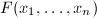,可以求得它在某些点上的函数值,我们的任务是找到一个各个变元次数均不超过 的多元多项式,使得它们在各整点上的值相同.注意到我们在这里的问题的提法是很具有一般性的,不仅可以将GCD问题化为这种形式,甚至也可以将诸如多项式的乘法等问题这样提出来.
的多元多项式,使得它们在各整点上的值相同.注意到我们在这里的问题的提法是很具有一般性的,不仅可以将GCD问题化为这种形式,甚至也可以将诸如多项式的乘法等问题这样提出来.
稠密插值的基本思想就是递归地依次将各个变元插值回来,假设我们有一初值点,我们首先可以固定,而再取个的值,由一元插值方法(Newton法或Lagrange法)求得多项式,依次再确定各变元即可.
若我们设次一元多项式插值问题的复杂度为,则易知本算法的复杂度为[2].
稀疏插值
问题引入
如果我们先用一个例子来介绍稀疏插值算法,将会对它有一个更好的了解.
从上节稠密插值算法过程我们可以看出,对 个变元次数不超过的多项式的插值我们大约要对函数求值次.为了便于说明,我们用[2]中所用的例子:对于多项式
其需要计算函数值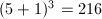次！事实上,这么多插值次数对于这样稀疏的多项式显然是极其不划算的.我们重复一下插值的过程以说明稀疏插值是如何减少插值次数的.
个变元次数不超过的多项式的插值我们大约要对函数求值次.为了便于说明,我们用[2]中所用的例子:对于多项式
其需要计算函数值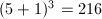次！事实上,这么多插值次数对于这样稀疏的多项式显然是极其不划算的.我们重复一下插值的过程以说明稀疏插值是如何减少插值次数的.
首先可以由赋值点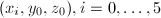通过稠密插值得到.下一步即要再选择5个 的赋值点
的赋值点 ,计算才能由此插值得到.如果是稠密插值法,此时对于每个,我们都需取6个
,计算才能由此插值得到.如果是稠密插值法,此时对于每个,我们都需取6个 来插值,但是如果选的值恰当(所谓恰当的意义,后文定义2和定理1将会给出说明),我们完全可以假设对于,也有
于是,对每个只需取3个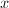的赋值点来插值,通过解方程的方法计算系数.
来插值,但是如果选的值恰当(所谓恰当的意义,后文定义2和定理1将会给出说明),我们完全可以假设对于,也有
于是,对每个只需取3个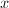的赋值点来插值,通过解方程的方法计算系数.
这样,我们总共计算函数值的次数为,从而得到了,注意从这一步开始,我们已经节省了插值次数,从原来的需要求值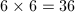次降到了21次.并且可设求得的具有形式:
接下来的步骤就比较顺理成章了,我们同样要再计算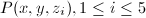,此时可假设各多项式具有形式 则需再求值次,总共求值次数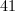次.
稀疏插值算法
为了叙述方便,给出如下记号.设多项式,为某个域,每个变元的次数都不超过,并且的的单项式项式为 (对于稀疏多项式有).设
(对于稀疏多项式有).设 为一元有序对,定义单项式记号
则多项式可记为
其中均为元序对.
为一元有序对,定义单项式记号
则多项式可记为
其中均为元序对.
从某种意义上说,集合反映了多项式的“结构”,因而我们定义下面的:
注意到一般情况下只有 欲使两者相等,则必须的取值使得以为主变元的多项式的各项系数()均在其上不为零.据此,我们可以给出精确求值点的概率估计.
 证毕.
证毕.
取足够大的 可以减小此概率,这正是我们每一步稀疏插值时假设目标多项式具有同样的模板的概率依据.
可以减小此概率,这正是我们每一步稀疏插值时假设目标多项式具有同样的模板的概率依据.
下面，我们把整个插值还原的过程描述如下:
,
输出:多项式,使得.
- 随机任取个值,利用求得的值,用一元插值算法(如算法1)求出多项式,
- 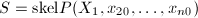,设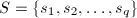,
- 将
 顺次由
顺次由 循环到,做如下4-6步,
循环到,做如下4-6步, - 随机任取个值,对于每个,设
具有如下形式
取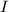组赋值点构造独立的线性方程组来求出,于是得到个多项式
- 利用第4步求出的个多项式对每个系数进行一元插值算法求出
 ,则
,则
- 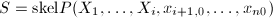,设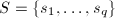,
- 输出.
对于特征为零的域,这一点是很容易做到的,只需将取为前 个素数即可,或者当有限域的特征足够大(特征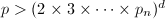(2\times 3\times\cdots\times p_n)^d$" class="latex-inline" style="vertical-align: -5px" width="165" height="19">)时也可如此取赋值点,此时算法仅可能当初始点非精确赋值点时失败,因此根据定理1,我们知道失败的概率为
个素数即可,或者当有限域的特征足够大(特征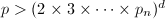(2\times 3\times\cdots\times p_n)^d$" class="latex-inline" style="vertical-align: -5px" width="165" height="19">)时也可如此取赋值点,此时算法仅可能当初始点非精确赋值点时失败,因此根据定理1,我们知道失败的概率为
另一方面,当域的特征 有限时,此时我们随机选取这样个赋值点,当其非精确赋值点或Vandermonde行列式奇异时均会失败,其概率([2]P240-242)
有限时,此时我们随机选取这样个赋值点,当其非精确赋值点或Vandermonde行列式奇异时均会失败,其概率([2]P240-242)
Euclid算法和一般模算法
概述
我们已经解决了一元多项式的GCD问题,对于多元情形,我们仍然只考虑整系数环上的多项式,即中的多项式.首先根据Guass引理,我们有:
于是,我们顺利地将元问题化为了 元子问题.将此过程递归地进行,最终化为一元问题可求解.显而易见,这种算法系数的增长是十分迅速的,不宜采用.
元子问题.将此过程递归地进行,最终化为一元问题可求解.显而易见,这种算法系数的增长是十分迅速的,不宜采用.
回忆前面处理一元问题采用模算法的思想,我们希望利用上的模算术来简化问题的计算.若我们取一个一次多项式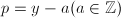, 为一UFD,考虑上的多项式,并记
为一UFD,考虑上的多项式,并记 到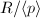的同态像为或
到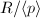的同态像为或 ,则有下面的定理:
,则有下面的定理:
 均为本原多项式,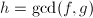,设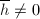,则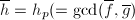当且仅当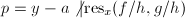.
均为本原多项式,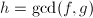,设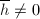,则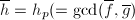当且仅当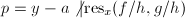.
首先根据模同态的性质,我们显然有 ,若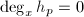,则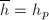显然.设,此是有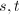使得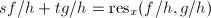,因此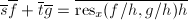,由于,所有,即,充分性得证.(必要性证明略去)
□
,若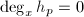,则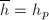显然.设,此是有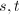使得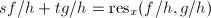,因此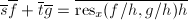,由于,所有,即,充分性得证.(必要性证明略去)
□
于是我们可以得到类似于一元情形的一种赋值同态模算法[3],这里不再详细将算法列出,然而我们需要注意的是这里会有一个领项系数的问题,例如两多项式的最大公因子为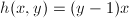,对进行赋值同态时我们可能会取如下值:
这样,通过两次赋值进行插值即得,然而若是我们“不幸”取了一个负值:
注意在中 为可逆元,因而求其中的GCD问题时可相差正负号,一般情况我们取首项系数为正,此时将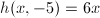和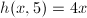插值则得不到正确的结果,只有取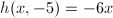时才是正确的.这个问题仅在最大公因子对主变元的领项系数是一非平凡多项式才会出现,对于这种情况,若要比较好地处理,则须在赋值之前对领项系数进行处理.
为可逆元,因而求其中的GCD问题时可相差正负号,一般情况我们取首项系数为正,此时将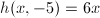和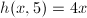插值则得不到正确的结果,只有取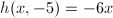时才是正确的.这个问题仅在最大公因子对主变元的领项系数是一非平凡多项式才会出现,对于这种情况,若要比较好地处理,则须在赋值之前对领项系数进行处理.
我们同时注意到作为一个域的简单性和其能有效抑制 上系数膨胀问题的性质,我们可以取模素数和赋值同态的综合算法求解.
上系数膨胀问题的性质,我们可以取模素数和赋值同态的综合算法求解.
上最大公因子
根据前面的分析,我们先要解决上求最大公因子的问题,此要先通过赋值同态将其转化为上的问题.
为了说明算法的方便,本算法中提到的容度,本原部分,首项系数等都是就多项式环而言的,亦即及都应是中的元素.
,,
输出:.
- 若
 则是一元问题,直接调用相关算法求得首一的,输出
则是一元问题,直接调用相关算法求得首一的,输出 ,
, - 初始化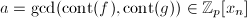(注意这是一元问题),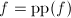,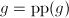,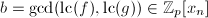,
- 赋初值,,,,
- 循环做下面5-10步,
- 随机任取使得且,将
 添入中,
添入中, - 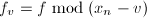,,递归调用本算法求解元子问题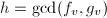,令,,
- 将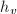正则化使得,即令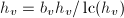,
- 若则令,,,
- 若上一步不成立且,则利用中国剩余定理或插值算法其出,使得不变且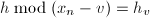,即令
- 若则:令,若且则输出,否则若
 则输出.
则输出.
多元多项式的"Mignotte"界
在处理整系数一元多项式最大公因子时我们曾经引进所谓的Mignotte界,这是Mignotte于1974年提出的对一元多项式因子系数界的估计.这一节我们来讨论对于整系数多元多项式同样的问题.为了后文叙述的方便,我们先回忆一下对于一元情形的Mignotte界,并表述为如下定理(见定理13):
 ,,则有
,,则有
为了讨论多元情形,我们给出:
Coron于2004年提出了二元情形下对Mignotte界的推广,有如下定理(见[4]和[5]3.2节):
 ,则有
,则有
我们很容易再从二元情况推广到多元情况,有如下定理:
证明过程是类似的,只需作相应的替换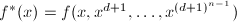,并且注意到 的次数实际上是不超过
即可.
的次数实际上是不超过
即可.
有了多元多项式的"Mignotte"界,我们在用模素数方法处理多元多项式时,至少多了一个用对系数界的估计的方法,来帮助判断多项式是否能还原到整系数中.当然,我们知道Mignotte界是对一元情形一个相当好的估计,本节定理对多元情形的估计虽从其推广而来,却不一定是最好的估计,而且其随多项式规模和未定元的个数增长有可能会变得很大,我们在实际算法中仅参考.
上最大公因子
在我们计算最大公因子的步骤 中,第二环节和第三环节已由算法3完成,本节将要讨论首尾两个环节,如无特别说明,本节中,等均是就整系数而言的.
输出:.
- 初始化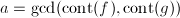,,,
 ,
, - 赋初值,,,,,
- 循环做下面4—9步,
- 任取比较大的素数直至且,
- 令,
 ,,调用算法3计算,并令,
,,调用算法3计算,并令, - ,
- 若则令,
 ,,
,, - 若上步判断不成立且,则用中国剩余定理计算使得不变且,再令,
- 若limit$" class="latex-inline" style="vertical-align: -4px" width="67" height="16">则:令,若且则输出,否则若则输出.
关于本算法需要做一点说明.首先在 和的计算中都是取了对变元的次数[6],实际上对所有的变元都取次数来比较也是可行的,并且可能更准确.其次,的计算本身并不是多元多项式因子系数的界,我们可以用前一节的"Mignotte"界来代替,也可以就用此限制,因为当limit$" class="latex-inline" style="vertical-align: -4px" width="67" height="16">后还有判断,这只是预判断.我们还可以加上一则预判断,就是在中国剩余定理计算前后是否变化,当不变时再继续后面的判断.
和的计算中都是取了对变元的次数[6],实际上对所有的变元都取次数来比较也是可行的,并且可能更准确.其次,的计算本身并不是多元多项式因子系数的界,我们可以用前一节的"Mignotte"界来代替,也可以就用此限制,因为当limit$" class="latex-inline" style="vertical-align: -4px" width="67" height="16">后还有判断,这只是预判断.我们还可以加上一则预判断,就是在中国剩余定理计算前后是否变化,当不变时再继续后面的判断.
Zippel稀疏插值模算法
Zippel稀疏模算法是求多元多项式最大公因子一个相当有效的算法,有关这方面的文献可以参见[7]P80-82,[1],[6]P312-313等.下面我们以一个文献中的具体的例子将这个问题简要地阐述一下.
一个具体的例子
用普通的稠密插值算法可以求得然后我们再对取其它赋值点来计算,此时我们假定具有形式,不必对每个的赋值点都取5个的赋值点来算,只需取2个点来计算即可.例如当时,计算下面两个式子:
于是我们得到下面的方程组:
解得 ,因此得到.同理我们还可以得到
,因此得到.同理我们还可以得到
此时利用在4个赋值点计算的结果,利用稠密插值可以得到
其次,我们再取素数,此时也不必取前面那么多赋值点,利用稀疏性假设,我们可以认为具有形式,只需取两组进行插值,例如: 于是解方程可得.
算法描述
前面我们曾经介绍过了Zippel稀疏插值算法的思想以及具体操作的方法,现在我们只需稍加改动,具体给出求值函数的形式,就可以用来计算最大公因子.本节中将要给出的算法描述可以参考[2]15.3节.
先对记号做一些说明,在下面将要介绍的插值算法中,我们保留变元,并记之为 .对集合
的插值即求多项式使得.
.对集合
的插值即求多项式使得.
稀疏插值算法1和稀疏插值算法2两者互相递归调用.
输出:多项式 的最大公因子的某个倍数,使得其关于的首项系数为.
的最大公因子的某个倍数,使得其关于的首项系数为.
- 若
 则输出,
则输出, - 令,并任取一赋值点,
- 递归调用本算法计算的最大公因子
 ,其中第一个参数输入,
,其中第一个参数输入, - 令为多项式关于的系数()中含最多单项式的系数的单项式个数,同时对
 从
从 循环到顺次命,
循环到顺次命, - 对从
 循环到顺次做下面6,7步,
循环到顺次做下面6,7步, - 随机取不重复的赋值点,调用算法6,输入,,,,,得到稀疏插值求得的多项式
 ,
, - 对从循环到顺次命,
- 对从循环到顺次利用稠密插值算法由计算到到多项式,令
 ,
, - 若不能同时整除和
 则退出整个算法重新选取赋值点（整个算法失败）,否则输出.
则退出整个算法重新选取赋值点（整个算法失败）,否则输出.
 ,多项式,,,,
,多项式,,,,
输出:由它们计算得到稀疏插值的结果,也即,的最大公因子的某个倍数,其关于的首项系数为.
- 若则输出,
- 任取
 个赋值点,
个赋值点, - 对从循环到顺次做下面4,5步,
- 令,
- 对从循环到顺次命,
- 对从循环到,由,以及中含的项和计算出Vandermonde矩阵各元素,解线性方程组可得(具体方法见注5),
- 输出.
 为输入模板集中最后一项指标为,即的系数为的指标在前维上投影的集合.例如对于指标集
有,.设的元素个数为,由赋值点和指标集可以计算得到一个阶的Vandermonde矩阵(若此矩阵奇异,则返回算法第2步重新选取赋值点).再取的前（肯定小于）项,以此可得一线性方程组.其解配上相应的模板集即到多项式.
为输入模板集中最后一项指标为,即的系数为的指标在前维上投影的集合.例如对于指标集
有,.设的元素个数为,由赋值点和指标集可以计算得到一个阶的Vandermonde矩阵(若此矩阵奇异,则返回算法第2步重新选取赋值点).再取的前（肯定小于）项,以此可得一线性方程组.其解配上相应的模板集即到多项式.
如果和都是关于的首一多项式,则直接调用算法5,输入参数 即可,但是对于关于的首项系数不为1的多项式,我们可如下给出它们的最大公因子.其中为了使我们每一步最后的试除法能够成功,调用5时我们用,.此时,为了使稠密插值的结果其首项系数为,我们在算法5第2步中令.
即可,但是对于关于的首项系数不为1的多项式,我们可如下给出它们的最大公因子.其中为了使我们每一步最后的试除法能够成功,调用5时我们用,.此时,为了使稠密插值的结果其首项系数为,我们在算法5第2步中令.
 ,,并令,,
,,并令,,
求GCD的其它方法
关于多元多项式的GCD问题,前述的一般算法以及Zippel稀疏插值模算法已经能够相当有效地处理,因此这一节所说的方法仅是作一些补充说明,算法的细节不再详细说明,有兴趣可以参考列出的一些文献.
启发式算法(Heuristic GCD)
启发式算法是一种将多元多项式GCD问题转化为大整数问题的算法.此算法的优势在于它将问题化为整数计算问题,而一般说来,对于一个计算机代数系统,其整数计算的部分都是在系统的Kernel中,因而由此提高计算效率,并且其前提为我们有一个非常高效处理整数的内核.其次,对于一般的小问题(即不是显得特别巨型冗长的多项式)来说,用启发式算法还是比插值算法可能来得快.
本节描述参考[3].至于算法的具体实现,可参考[6]7.7节.
首先我们给出如下一个有用的引理:
 ,,则.
,,则.
利用上面的引理,下面的定理给出了一种多项式GCD模算法.以下本节中的范数均指无穷范数.
在内任何因子的范数的2倍,令,,,其中,令 ,则
,则
因为在该定理中要估计各因子的范数的上界,因此对于一元情形,可以利用Mignotte界来给出,但是对于多元情形则无法给出.下面给出一例说明用此方法做一元多项式GCD问题.
 ,,于是
经检验,确是.
,,于是
经检验,确是.
由于上面的方法一则依赖Mignotte界,其系数绝对值仍然可能很大,二则对于多元情形并不适用,因此仍需对其进行改进.
下面的Cauchy不等式给出了![$\mathbb{C}[x]$](latex/latex2png-MultiPoly_27044309_-5.gif) 上多项式根的模的一个估计.
上多项式根的模的一个估计.
![$f=\sum_{0\le i\le n}f_ix^i\in\mathbb{C}[x]$](latex/latex2png-MultiPoly_83713551_-9.gif) ,是它的根,则对任何一个根
,是它的根,则对任何一个根 满足,若非常数且,则s$" class="latex-inline" style="vertical-align: -5px" width="117" height="18">.
满足,若非常数且,则s$" class="latex-inline" style="vertical-align: -5px" width="117" height="18">.
 中,设,则由Cauchy不等式估计有:
而,由于,则
中,设,则由Cauchy不等式估计有:
而,由于,则 .故|c|s^d\ge s$" class="latex-inline" style="vertical-align: -5px" width="171" height="19">.同理,也可得到.
□
.故|c|s^d\ge s$" class="latex-inline" style="vertical-align: -5px" width="171" height="19">.同理,也可得到.
□
引理2可以用来引入下面的一元多项式模GCD算法.
 .同样的,我们可以设,容易得到.设为中范数较小者,则1+\|p\|_{\infty}\Rightarrow r\ge 1+1+\|p\|_{\infty}$" class="latex-inline" style="vertical-align: -5px" width="248" height="18">.若非常数,则由引理2知1$" class="latex-inline" style="vertical-align: -5px" width="124" height="18">,此与矛盾.故为常数,.
□
.同样的,我们可以设,容易得到.设为中范数较小者,则1+\|p\|_{\infty}\Rightarrow r\ge 1+1+\|p\|_{\infty}$" class="latex-inline" style="vertical-align: -5px" width="248" height="18">.若非常数,则由引理2知1$" class="latex-inline" style="vertical-align: -5px" width="124" height="18">,此与矛盾.故为常数,.
□
当我们用此算法对例2再次讨论时,发现赋值点的选取要小得多.由于,因此我们取,比前面取的要小得多.此时有,,,因此.
上述算法并不保证一定能够得到最大公因子.例如取,,则对二者取赋值点后求得的GCD必为偶数,但事实上,因此进一步我们必须考虑多项式的本原部分.下面的定理可以解决这一问题.
同前,则同样地有.
.令,则有 使得.且
记,则,故
于是,即且.
使得.且
记,则,故
于是,即且.
再设为中无穷范数较小者,于是.故非常数,于是由引理得s=r/2$" class="latex-inline" style="vertical-align: -5px" width="169" height="18">.因此,为常数,由知.
□
对于多元情况,我们先引入一些记号.本节后面的命题不再重述.设 是随机选取的一些整数,是非常数多项式,且使得,其中理想.记.
是随机选取的一些整数,是非常数多项式,且使得,其中理想.记.
满足,是某一正实数且,若非常数且是的因子,,则s$" class="latex-inline" style="vertical-align: -5px" width="125" height="18">.
因为,则有 因此s$" class="latex-inline" style="vertical-align: -5px" width="125" height="18">. □
下面两个定理的证明和前面一元情形两个定理的证明类似,这两个定理可以用来求多元多项式的最大公因子.
的选取同前所述,使得
满足1+\min(\|f\|_I,\|g\|_I)$" class="latex-inline" style="vertical-align: -5px" width="172" height="18">,令,的引入同前,则
的选取同定理10所述,满足1+2\min(\|f\|_I,\|g\|_I)$" class="latex-inline" style="vertical-align: -5px" width="183" height="18">. 的引入同前,则
的引入同前,则
EZ-GCD
EZ-GCD算法即Extended Zassenhaus算法([8]),它利用Hensel提升来计算多元多项式的GCD.此算法的具体实现可以参考[6]7.6节.
多元多项式因子分解的Kronecker算法
对于给定的多项式,我们取主变元为,并记之为.设
如果我们取多项式
易知如果有不可约因子分解,这里我们假设关于是无平方因子本原多项式,那么有
然而当我们对进行因子分解时,得到的不一定是上式,因为不一定均是不可约的.设的不可约因子分解为
则由因子组合算法可以还原在中的分解.
由此可见,Kronecker算法的思想本身是简单的,下面给出具体的算法.
 本原且无平方因子的多项式,
本原且无平方因子的多项式,
输出:其各不可约因子.
- 令为各变元次数的上界,求得多项式
的因子分解
- 令,
 ,,,
,,, - 若,则循环做下面4-6步,否则转第7步,
- 枚举的所有元子集,并做下面第5步,
- 由多项式我们可以还原得到多项式(见注6),若则令,,
 ,并转第3步,
,并转第3步,  ,转第3步,
,转第3步,- 输出.
利用Hensel提升的因子分解算法
概述
正如我们前面所说的以及多元GCD求解的方法,利用赋值同态的方法,我们也可以将多元因子分解问题转化为一元问题.我们很容易会产生如下一般性的想法,这里假设我们考虑![$f\in \mathbb{Z}[x_1,x_2,\ldots,x_n]$](latex/latex2png-MultiPoly_245877278_-5.gif) 的分解,并将变元视为主变元.
的分解,并将变元视为主变元.
![\begin{itemize}
\item 将$f$化为关于主变元$x$本原以及无平方因子的多项式.这一点是很容易做到的,由多元GCD算法可以求出$f$关于$x$各系数多项式的最大公因子,而由$\gcd(f,\partial f/\partial x)$可以将其化为无平方因子多项式的分解问题.
\item 利用赋值同态$I=\idea{x_2-a_2,\ldots,x_n-a_n}$将$f$化为$\tilde{f}=f\bmod I$,即$\tilde{f}(x)=f(x,a_2,\ldots,a_n)$,使得$\tilde{f}$无平方因子并且$\deg_x\tilde{f}=\deg_xf$.
\item 处理一元分解问题,得到不可约分解$\tilde{f}=g_1g_2\cdots g_r$,这里可以将$\mathrm{cont}\tilde{f}$任意分配到不可约因子$g_i$上.
\item 利用类似于Hensel提升的方法,将模$I$下的分解提升到足够高的模$I^k$下的分解,得到多元因子,最后采取诸如因子组合的方法将其还原到整系数多项式中的因子.
\end{itemize}](latex/latex2png-MultiPoly_261838713_.gif)
关于赋值点和主变元的选取,这里做一些补充.赋值点应优先选择,以保证无平方因子且关于次数不变.选择的好处是使得系数较小,由后面的算法我们看出对于非零赋值点,我们将对变量做一平移,以使提升算法的模运算也便于进行.
其次要考虑使得的不可约因子数尽可能少,关于的首项系数尽可能小,如果是更好,那么所有的不可约因子的首项系数都将为.
Extended Zassenhaus 算法
Zassenhaus算法基本上就是我们曾经提及的Hensel提升算法,具体也可参考[2]以及[9]第7节.
现在我们要介绍的扩展Zassenhaus算法,是指如下类似的问题.设有分解,其中,亦即 现在需找到,使得 对于,记,则此时,并记.基于这些符号上的说明,我们可以提出一种归纳的算法如下:
(即),,,并且满足前述相应条件,
输出:提升后的,.
- 计算,使得
- 利用扩展Euclid算法计算唯一的,使得
并且
 .(命,即可.此时若则有.并且此步可略去,因为可以在整个算法开始提升的第一步计算足够多的
.(命,即可.此时若则有.并且此步可略去,因为可以在整个算法开始提升的第一步计算足够多的 ,,保存起来并供后面各步提升时使用.)
,,保存起来并供后面各步提升时使用.) - 将中的用代替得到多项式,同理将中的用代替得到多项式.
- 令,并输出,.
 知是的
知是的 次齐次多项式.因而和也是它们的次齐次式.由
可知
同理有
因而
并且我们有.
次齐次多项式.因而和也是它们的次齐次式.由
可知
同理有
因而
并且我们有.
命,则 亦即. □
在向提升的过程中,倘若有某一步,则之后无须提升.
本算法是在整系数多项式下实现的.如果在中,其中为一素数幂,此算法也是可行的.我们有下面几个命题来保证.
必要性:设在中可逆,则,矛盾. □
下面给出的定理揭示了类似于Euclid整环的性质.
 ,还有.
,还有.
设已求得并使,则定义迭代算法如下:
设是 的解,再令
显然
因此.由题设条件和引理4知是中可逆元,我们可以作除法: 其中.再定义,即知满足定理.
唯一性:由的存在知道在中和也互素,设满足定理的还有,则易得,由且知.
□
我们可以将多元Hensel提升问题写为如下定理.

 时显然成立,现在我们归纳假设命题对于是成立的,此时设,可以将其在的基下进行表示,设表示为
其中.于是由定理12我们知道,都可以找到满足上面定理的唯一的满足
时显然成立,现在我们归纳假设命题对于是成立的,此时设,可以将其在的基下进行表示,设表示为
其中.于是由定理12我们知道,都可以找到满足上面定理的唯一的满足
令 由算法9的证明易知满足条件. □
[7]中给出了如下一个多元Hensel提升求因子分解的简单的例子.
 ,,有
设,,因为在中有,即
,,有
设,,因为在中有,即 .
.
 ,,易得
即,,同理可得,,经计算可得,.
,,易得
即,,同理可得,,经计算可得,. ,此时已有.
,此时已有.
因子还原
不妨设我们已得到因子分解
其中模去一个整数,是指在计算提升之前可以选择模掉一足够大的进行运算,以减小系数膨胀.当然也可以直接在整数环中计算,此种情况我们统一用表示.
因子还原的过程也是一个因子组合算法,这一算法已经多次出现,因此这里直接给出还原的算法.
输出:的不可约因子集合.
- 令,,,,,
- 若
 ,则循环做下面3-5步,否则转第6步,
,则循环做下面3-5步,否则转第6步, - 枚举的所有元子集,并做下面第4步,
- ,,若则令,,,,并转第2步,
- ,转第2步,
- 输出.
预先确定因子的首项系数
前几节组合起来可以给出一个完整的因子分解算法,然而其仍有一些效率上的不足.其中,因子还原时实际上涉及到Taylor展开,这正是我们前面尽量选择较小的赋值点的原因,以减轻此处计算负担.另外,首项系数的不确定使得EZ算法提升时的中间多项式将会比较复杂,最后因子还原时因而也有对其的处理.
我们先给出一个因子分解的例子.
取赋值点,则有分解.设,,提升算法给出
这时再经过一次首项系数的处理并取本原部分方可得到真正的因子和.
对于上例而言,若我们能预先确定各因子的首项系数,在提升之前就将,中的首项系数代替为实际首项系数,即,,则提升算法大大简化(对于此特例恰好无需任何提升).
设多项式关于主变元的首项系数为,设其不可约因子分解为
其中, 为其各不可约因子.
此时对于有分解
其中.我们的目的即是要确定各
为其各不可约因子.
此时对于有分解
其中.我们的目的即是要确定各 的首项系数,并将
的首项系数,并将 合理地分配到各个上.我们在选择赋值点时,需由满足如下几个条件:
合理地分配到各个上.我们在选择赋值点时,需由满足如下几个条件:
 ,
, 至少一有个素因子
至少一有个素因子 ,其不能整除和,
,其不能整除和,显然满足前两个条件的有无穷多组,若还要满足第三个条件,可参见[10]P1218的说明.
EEZ算法
参考文献
[1]Probabilistic algorithms for sparse polynomials, Lec. Notes Comp. Sci., 72 Springer-Verlag, 1979. 216-226.
[3]计算机代数基础---代数与符号计算的基本原理. 科学出版社. 2005.
[6]Algorithms for Computer Algebra, Kluwer Academic Publishers, 1992.
[7]计算机代数. 清华大学出版社. 北京. 2004.